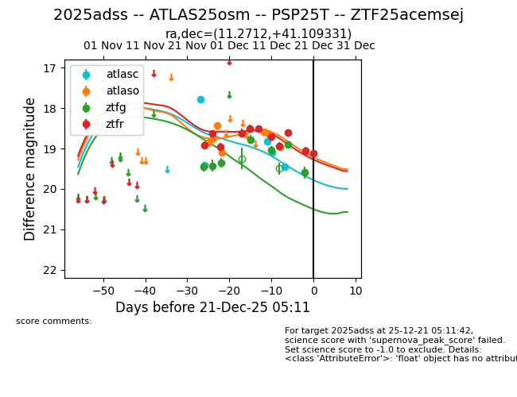
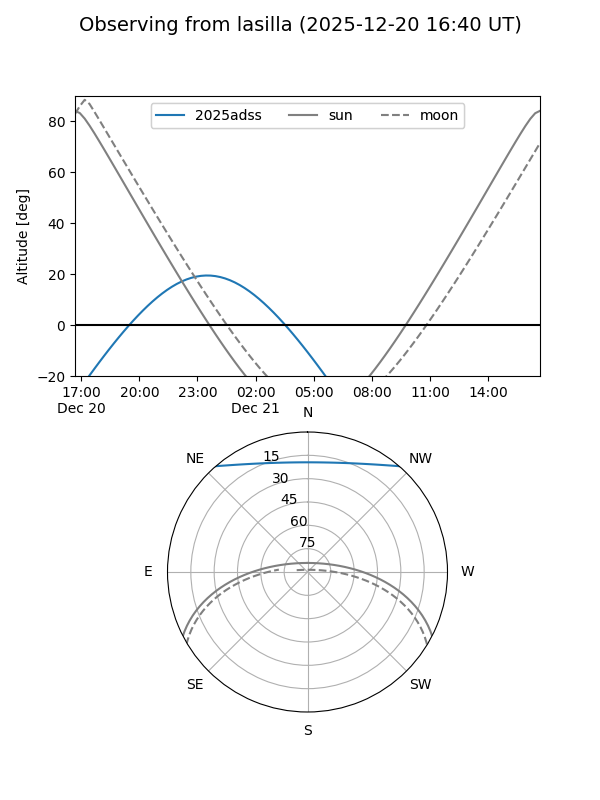
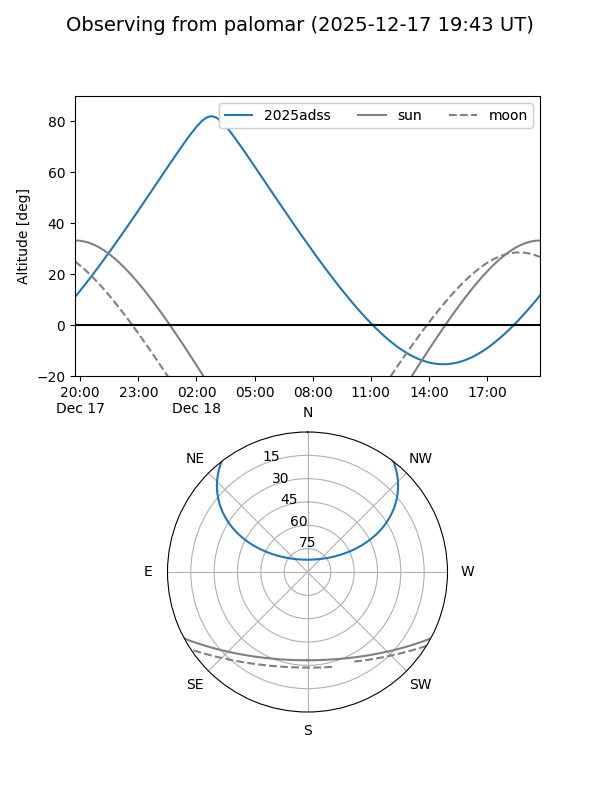
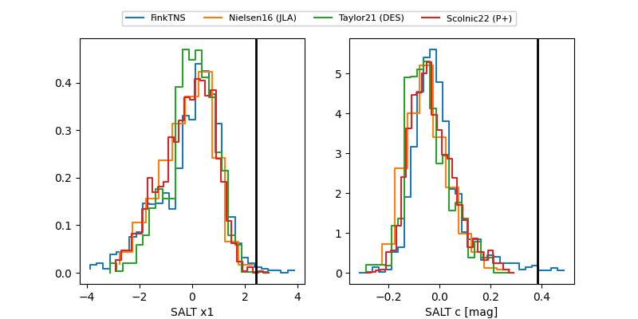

2025adss
Target 2025adss at 2025-12-19 06:39
Aliases and brokers:
FINK: fink-portal.org/ZTF25acemsej
Lasair: lasair-ztf.lsst.ac.uk/objects/ZTF25acemsej
ALeRCE: alerce.online/object/ZTF25acemsej
TNS: wis-tns.org/object/2025adss
YSE: ziggy.ucolick.org/yse/transient_detail/2025adss
alt names
ZTF25acemsej (ztf,fink_ztf)
2025adss (tns,yse)
PSP25T (panstarrs)
ATLAS25osm (atlas)
Coordinates:
equatorial (ra, dec) = 11.2712,+41.10933
equatorial (HMS+DMS) = 00:45:05.08,+41:06:33.59
galactic (l, b) = (121.6436,-21.74652)
Flags:
Photometry:
last atlasc=19.46, atlaso=18.95, ztfg=19.60, ztfr=19.05
5 atlasc, 7 atlaso, 7 ztfg, 10 ztfr detections
Lightcurve

Visibility


Additional plots
